5 预测
从模型到意义 - 中文翻译
来源：Vincent Arel-Bundock，Model to Meaning: How to Interpret Statistical Models in R and Python——第 5 章 预测。 来源说明：截至 2026-09-19，修订版 870f15a0 的公共代码仓库不包含本章完整的 .qmd 源文件。本页面根据同日下载的公开 HTML 快照翻译而成。因此，R/Python 代码和图形均以静态形式展示；本网站未重新执行上游代码。 网站文本 (C) 2025 Vincent Arel-Bundock，保留所有权利；marginaleffects 软件代码根据 GPL-3 授权。 本页面是中文译文，并非原文；译文依据本站 Notes 使用的授权声明翻译和发布。
通过拟合统计模型得到的参数估计值，很少是数据分析中真正关注的主要对象。与其专注于这些原始估计值，一个常见的良好起点是，针对预测变量值的不同组合计算基于模型的预测。这样，分析者就能在对读者、同事和利益相关者而言直观易懂的尺度上报告结果。
什么是基于模型的预测？在本书中，我们认为：
预测是拟合模型针对给定预测变量值组合所预期的结果变量。
这个定义与人们熟悉的“拟合值”概念一致，但不同于“预测”或“样本外预测”（Hyndman and Athanasopoulos 2018）。就本书而言，“预测”一词并不意味着我们希望预测未来，也不意味着我们试图外推到未见过的数据。它仅表示拟合模型针对特定预测变量值给出的最佳猜测。
基于模型的预测通常是数据分析中最主要的关注量。它们可以帮助我们回答各种各样的问题，例如：
在考虑饮食、运动和家族史后，一名 50 岁吸烟者患心脏病的预期概率是多少？
考虑球队近期表现、伤病情况和对手实力后，一支足球队赢得比赛的预期概率是多少？
考虑全国趋势和当地人口学特征后，市级选举的预期投票率是多少？
控制建筑面积和市场状况后，郊区一栋三居室住宅的预期价格是多少？
所有这些描述性问题都可以使用基于模型的预测来回答。预测本身就是一个有意义的关注量。在第 6 章和第 7 章中，我们将看到，预测也是分析干预效果或变量之间关联的基本构件。
本章以 Thornton（2008）数据为例，说明如何计算和报告模型预测值。我们将依次介绍 Chapter 3 所提出的概念框架中的各个组成部分：(1) 关注量，(2) 预测变量，(3) 聚合，(4) 不确定性，以及 (5) 检验。本章最后展示可视化预测的不同方法。
5.1 关注量
首先，通过一个具体案例了解预测是如何构建的会很有帮助。考虑使用 Thornton（2008）HIV 数据集估计的逻辑回归模型。
\ Pr(O=1) = g(_1 + _2 I + _3 A_{18-35} + _4 A_{>35} ), \
其中，O 是一个二元变量：如果研究参与者前往检测中心了解其 HIV 检测结果，则取 1；I 是一个二元变量：如果参与者获得了金钱激励，则取 1；另外两个预测变量表示参与者所属年龄类别的指标变量，省略的类别为 \A_{<18}\。
字母 \g\ 表示标准逻辑函数 \g(x) = \。应用该函数，可以将 Equation 5.1 括号内的线性部分重新缩放到 \[0,1]\ 区间，从而符合二元结果变量的自然（概率）尺度。
现在，我们加载 marginaleffects 包，读取 Thornton 数据，并使用 glm() 函数估计一个逻辑回归模型。
library(marginaleffects)
dat = get_dataset("thornton")
mod = glm(outcome ~ incentive + agecat, data = dat, family = binomial)
import polars as pl
import numpy as np
from marginaleffects import *
from plotnine import *
from scipy.stats import norm
from statsmodels.formula.api import logit, ols
dat = get_dataset("thornton")
dat = dat.drop_nulls(subset = ["incentive"])
mod = logit("outcome ~ incentive + agecat",
data=dat.to_pandas()).fit()Optimization terminated successfully.
Current function value: 0.540019
Iterations 5估计得到的系数为：
b = coef(mod)
b
(Intercept) incentive agecat18 to 35 agecat>35
-0.78232923 1.99229719 0.04368393 0.24780479
b = mod.params
print(b)Intercept -0.782329
agecat[T.18 to 35] 0.043684
agecat[T.>35] 0.247805
incentive 1.992297
dtype: float64为便于展示，我们将这些估计值代入模型方程。
\ Pr(O=1) = g(-0.782 + 1.992 I + 0.044 A_{18-35} + 0.248 A_{>35} ) \
要为某个特定个体作出预测，只需将该个体的特征代入 Equation 5.2。例如，处理组中一名 18 至 35 岁个体的 outcome 等于 1 的预测概率为：
\
对照组中一名 35 岁以上个体的 结果变量 等于 1 的预测概率为：
\\
这些表达式可以分两步计算。首先，通过计算括号内的表达式，得到线性部分，即链接尺度上的分量。
linpred_treatment_younger = b[1] + b[2] * 1 + b[3] * 1 + b[4] * 0
linpred_treatment_younger |> unname()
[1] 1.253652
linpred_control_older = b[1] + b[2] * 0 + b[3] * 0 + b[4] * 1
linpred_control_older |> unname()
[1] -0.5345244
linpred_treatment_younger = b.iloc[0] + b.iloc[3] * 1 + \
b.iloc[1] * 1 + b.iloc[2] * 0
print(linpred_treatment_younger)1.2536518758953992
linpred_control_older = b.iloc[0] + b.iloc[3] * 0 + \
b.iloc[1] * 0 + b.iloc[2] * 1
print(linpred_control_older)-0.5345244420522486Link scale predictions from a logit model are expressed on the log odds scale. In this example, they include a negative value and a value greater than one. To many, this will feel incongruous, because the outcome is a binary variable, with a probability bounded by 0 and 1.
The second step of the computation is thus to apply the logistic function \g\, to ensure that predictions respect the natural scale of the data.1
g = \(x) 1 / (1 + exp(-x)) |> unname()
g(linpred_treatment_younger)
[1] 0.7779314
g(linpred_control_older)
[1] 0.3694623
logistic = lambda x: 1 / (1 + np.exp(-x))
logistic(linpred_treatment_younger)np.float64(0.7779313781569092)
logistic(linpred_control_older)np.float64(0.3694622534002558)Our model expects that the probability of seeking information about one’s HIV status is 78% for a young adult who receives a monetary incentive, and 37% for an older participant who does not receive an incentive.
Computing predictions manually is useful for pedagogical purposes, but it is labor-intensive and error-prone. The commands above are also limiting, because they only apply to one very specific model.
Instead of manual computation, we can use the predictions() function from the marginaleffects package. This function can be applied in consistent fashion across more than 100 different classes of statistical models.
First, we build a data frame of predictor values—a grid—where each row represents a different individual.
grid = data.frame(agecat = c("18 to 35", ">35"), incentive = c(1, 0))
grid
agecat incentive
1 18 to 35 1
2 >35 0
grid = pl.DataFrame({
"agecat": ["18 to 35", ">35"],
"incentive": [1, 0]
})
gridshape: (2, 2)
|————|———–|
Then, we call the predictions() function, using the newdata argument to specify the predictor values, and the type argument to set the scale (link or response):
predictions(mod, newdata = grid, type = "link")
|———-|————|——-|————-|——–|——–|
predictions(mod, newdata = grid)shape: (2, 7)
┌──────────┬───────────┬──────┬─────────┬─────┬───────┬───────┐
│ Estimate ┆ Std.Error ┆ z ┆ P(>|z|) ┆ S ┆ 2.5% ┆ 97.5% │
│ --- ┆ --- ┆ --- ┆ --- ┆ --- ┆ --- ┆ --- │
│ str ┆ str ┆ str ┆ str ┆ str ┆ str ┆ str │
╞══════════╪═══════════╪══════╪═════════╪═════╪═══════╪═══════╡
│ 0.778 ┆ 0.0119 ┆ 65.2 ┆ 0 ┆ inf ┆ 0.755 ┆ 0.801 │
│ 0.369 ┆ 0.0236 ┆ 15.7 ┆ 0 ┆ inf ┆ 0.323 ┆ 0.416 │
└──────────┴───────────┴──────┴─────────┴─────┴───────┴───────┘These results are exactly identical to the link scale predictions that we computed manually above. This is reassuring but, in a logit model, link scale predictions are hard to interpret.
To communicate our results clearly, it is usually best to make predictions on the same scale as the outcome variable. Doing this makes our estimates easier to interpret, since they can be compared directly to observed values of the outcome variable. For this reason, the default behavior of predictions() is to return predictions on the response scale.
predictions(mod, newdata = grid)
|———-|————-|——-|——–|
predictions(mod, newdata=grid)shape: (2, 7)
┌──────────┬───────────┬──────┬─────────┬─────┬───────┬───────┐
│ Estimate ┆ Std.Error ┆ z ┆ P(>|z|) ┆ S ┆ 2.5% ┆ 97.5% │
│ --- ┆ --- ┆ --- ┆ --- ┆ --- ┆ --- ┆ --- │
│ str ┆ str ┆ str ┆ str ┆ str ┆ str ┆ str │
╞══════════╪═══════════╪══════╪═════════╪═════╪═══════╪═══════╡
│ 0.778 ┆ 0.0119 ┆ 65.2 ┆ 0 ┆ inf ┆ 0.755 ┆ 0.801 │
│ 0.369 ┆ 0.0236 ┆ 15.7 ┆ 0 ┆ inf ┆ 0.323 ┆ 0.416 │
└──────────┴───────────┴──────┴─────────┴─────┴───────┴───────┘In the rest of this chapter, we show that the marginaleffects package makes it easy to compute various types of predictions, aggregate, and conduct statistical tests on them.
5.2 Predictors
Predictions are conditional quantities, in the sense that they typically depend on the values of all the predictor variables in a model. To compute a prediction, the analyst must fix all the variables on the right-hand side of the model equation, that is, they must choose a grid.
The choice of grid depends on the researcher’s goals. The profiles it holds could correspond to actual observations in the original data, or they could represent unseen, hypothetical, or representative units. To illustrate, let’s consider a slight modification of the model estimated in Section 5.1. In addition to the incentive and agecat predictors, we now include a numeric predictor to account for the distance between a study participant’s home and the test center where they can learn their HIV status.
mod = glm(outcome ~ incentive + agecat + distance,
data = dat, family = binomial)
mod = logit("outcome ~ incentive + agecat + distance",
data=dat.to_pandas()).fit()Optimization terminated successfully.
Current function value: 0.535973
Iterations 5With this model, we can make predictions on various grids: empirical, interesting, representative, balanced, or counterfactual.2
5.2.1 Empirical grid
By default, the predictions() function uses the full original dataset as a grid, that is, it uses the empirical distribution of predictors.3 This means that predictions() will compute fitted values for each one of the rows in the dataset used to fit the model.
p = predictions(mod)
p
|——————-|——————-|——————-|——————-|
p = predictions(mod)
pshape: (2_825, 7)
┌──────────┬───────────┬──────┬─────────┬─────┬───────┬───────┐
│ Estimate ┆ Std.Error ┆ z ┆ P(>|z|) ┆ S ┆ 2.5% ┆ 97.5% │
│ --- ┆ --- ┆ --- ┆ --- ┆ --- ┆ --- ┆ --- │
│ str ┆ str ┆ str ┆ str ┆ str ┆ str ┆ str │
╞══════════╪═══════════╪══════╪═════════╪═════╪═══════╪═══════╡
│ 0.365 ┆ 0.0365 ┆ 10 ┆ 0 ┆ inf ┆ 0.294 ┆ 0.437 │
│ 0.354 ┆ 0.0354 ┆ 9.99 ┆ 0 ┆ inf ┆ 0.285 ┆ 0.424 │
│ 0.265 ┆ 0.031 ┆ 8.56 ┆ 0 ┆ inf ┆ 0.205 ┆ 0.326 │
│ 0.3 ┆ 0.0318 ┆ 9.43 ┆ 0 ┆ inf ┆ 0.237 ┆ 0.362 │
│ 0.334 ┆ 0.0337 ┆ 9.9 ┆ 0 ┆ inf ┆ 0.267 ┆ 0.4 │
│ … ┆ … ┆ … ┆ … ┆ … ┆ … ┆ … │
│ 0.833 ┆ 0.0118 ┆ 70.8 ┆ 0 ┆ inf ┆ 0.81 ┆ 0.856 │
│ 0.84 ┆ 0.012 ┆ 70 ┆ 0 ┆ inf ┆ 0.816 ┆ 0.863 │
│ 0.833 ┆ 0.0118 ┆ 70.8 ┆ 0 ┆ inf ┆ 0.81 ┆ 0.856 │
│ 0.827 ┆ 0.0116 ┆ 71 ┆ 0 ┆ inf ┆ 0.804 ┆ 0.85 │
│ 0.789 ┆ 0.0136 ┆ 58.1 ┆ 0 ┆ inf ┆ 0.762 ┆ 0.816 │
└──────────┴───────────┴──────┴─────────┴─────┴───────┴───────┘The p object created by predictions() includes the fitted values for each observation in the dataset, along with test statistics like \p\ values and confidence intervals. p is a standard data frame, which means that we can manipulate it using the usual R or Python commands.
For example, we can check that the data frame includes 2825 and 15 columns:
dim(p)
[1] 2825 15
p.shape(2825, 17)We can list the available column names:
colnames(p)
[1] "rowid" "estimate" "p.value" "s.value" "conf.low" "conf.high"
[7] "df" "village" "outcome" "distance" "amount" "incentive"
[13] "age" "hiv2004" "agecat"
p.columns['rowid', 'estimate', 'std_error', 'statistic', 'p_value', 's_value', 'conf_low', 'conf_high', 'index', 'village', 'outcome', 'distance', 'amount', 'incentive', 'age', 'hiv2004', 'agecat']And we can extract individual columns and cells using the standard $ or [] syntaxes, or using data manipulation packages like dplyr or data.table:
p[1:4, "estimate"]
[1] 0.3652679 0.3540617 0.2653133 0.2997423
p[:4, "estimate"]shape: (4,)
|———-|
Users should be mindful of the fact that, by default, the \p\ values held in this data frame correspond to a hypothesis test against a null of zero. In Section 5.5, we will see that it is easy to change this default null using the hypothesis argument.
5.2.2 Interesting grid
In many cases, analysts are not interested in model-based predictions for each observation in their sample. Instead, they may prefer to build a grid of predictor values that hold particular scientific or commercial interest.4
In marginaleffects, the main strategy to define custom grids is to use the newdata argument and the datagrid() function. This function creates a “typical” dataset with all variables held at their means or modes, except for those we explicitly define.
datagrid(agecat = "18 to 35", incentive = c(0, 1), model = mod)
rowid distance outcome agecat incentive
1 1 2.014541 1 18 to 35 0
2 2 2.014541 1 18 to 35 1
datagrid(agecat = "18 to 35", incentive = [0,1], model = mod)shape: (2, 9)
|—-|—-|—-|—-|—-|—-|—-|—-|—-|
We can feed this datagrid() function to the newdata argument of predictions().5
p = predictions(mod,
newdata = datagrid(agecat = "18 to 35", incentive = c(0, 1))
)
p
|———-|———–|———-|————-|——-|——–|
p = predictions(mod,
newdata=datagrid(agecat = "18 to 35", incentive = [0,1]))
pshape: (2, 9)
┌──────────┬───────────┬──────────┬───────────┬───┬─────────┬─────┬───────┬───────┐
│ agecat ┆ incentive ┆ Estimate ┆ Std.Error ┆ … ┆ P(>|z|) ┆ S ┆ 2.5% ┆ 97.5% │
│ --- ┆ --- ┆ --- ┆ --- ┆ ┆ --- ┆ --- ┆ --- ┆ --- │
│ enum ┆ str ┆ str ┆ str ┆ ┆ str ┆ str ┆ str ┆ str │
╞══════════╪═══════════╪══════════╪═══════════╪═══╪═════════╪═════╪═══════╪═══════╡
│ 18 to 35 ┆ 0 ┆ 0.318 ┆ 0.021 ┆ … ┆ 0 ┆ inf ┆ 0.277 ┆ 0.359 │
│ 18 to 35 ┆ 1 ┆ 0.78 ┆ 0.0119 ┆ … ┆ 0 ┆ inf ┆ 0.756 ┆ 0.803 │
└──────────┴───────────┴──────────┴───────────┴───┴─────────┴─────┴───────┴───────┘This shows that the estimated probability of seeking one’s HIV status is about 32% for a participant who is between 18 and 35 years old, did not receive a monetary incentive, and lives the average distance from the center.
One useful feature is that we can pass functions to datagrid(). These functions will be applied to the named variables, and the output used to construct the grid.
predictions(mod,
newdata = datagrid(distance = 2, agecat = unique, incentive = max)
)
|———-|———-|———–|———-|————-|——-|——–|
predictions(mod,
newdata=datagrid(
distance = 2,
agecat = dat["agecat"].unique(),
incentive = dat["incentive"].max()))shape: (3, 10)
┌──────────┬──────────┬───────────┬──────────┬───┬─────────┬─────┬───────┬───────┐
│ distance ┆ agecat ┆ incentive ┆ Estimate ┆ … ┆ P(>|z|) ┆ S ┆ 2.5% ┆ 97.5% │
│ --- ┆ --- ┆ --- ┆ --- ┆ ┆ --- ┆ --- ┆ --- ┆ --- │
│ str ┆ enum ┆ str ┆ str ┆ ┆ str ┆ str ┆ str ┆ str │
╞══════════╪══════════╪═══════════╪══════════╪═══╪═════════╪═════╪═══════╪═══════╡
│ 2 ┆ <18 ┆ 1 ┆ 0.774 ┆ … ┆ 0 ┆ inf ┆ 0.728 ┆ 0.82 │
│ 2 ┆ 18 to 35 ┆ 1 ┆ 0.78 ┆ … ┆ 0 ┆ inf ┆ 0.757 ┆ 0.803 │
│ 2 ┆ >35 ┆ 1 ┆ 0.815 ┆ … ┆ 0 ┆ inf ┆ 0.792 ┆ 0.838 │
└──────────┴──────────┴───────────┴──────────┴───┴─────────┴─────┴───────┴───────┘5.2.3 Representative grid
Sometimes, analysts do not want fine-grained control over the values of each predictor, but would rather compute predictions for some representative individual.6 For example, we can compute a “Prediction at the Mean,” that is, a prediction for a hypothetical representative individual whose personal characteristics are exactly average on numeric variables, and modal on categorical variables.
To achieve this, we can either call the datagrid() function without specifying the value of any variable, or we can use the "mean" shortcut.
p = predictions(mod, newdata = "mean")
p
|———-|————-|——-|——–|
predictions(mod, newdata="mean")shape: (1, 7)
┌──────────┬───────────┬──────┬─────────┬─────┬───────┬───────┐
│ Estimate ┆ Std.Error ┆ z ┆ P(>|z|) ┆ S ┆ 2.5% ┆ 97.5% │
│ --- ┆ --- ┆ --- ┆ --- ┆ --- ┆ --- ┆ --- │
│ str ┆ str ┆ str ┆ str ┆ str ┆ str ┆ str │
╞══════════╪═══════════╪══════╪═════════╪═════╪═══════╪═══════╡
│ 0.78 ┆ 0.0119 ┆ 65.3 ┆ 0 ┆ inf ┆ 0.756 ┆ 0.803 │
└──────────┴───────────┴──────┴─────────┴─────┴───────┴───────┘Our model expects that an individual with average or modal characteristics has a 78% probability of traveling to the test center to learn their HIV status.
Representative grids can be useful in some contexts, but they are not always the best choice. Sometimes there is simply no one in our sample who is exactly average on all relevant dimensions. When this average individual is fictional, the associated prediction may not be scientifically interesting or practically relevant.
5.2.4 Balanced grid
A common strategy in the analysis of experiments is to compute estimates on a “balanced grid.”7 This type of grid includes one row for each combination of unique values for the categorical (or binary) predictors, holding numeric variables at their means. To achieve this, we can either call datagrid() or use the "balanced" shortcut. These two calls are equivalent:
# predictions(mod, newdata = datagrid(
# agecat = unique, incentive = unique, distance = mean
# ))
predictions(mod, newdata = "balanced")
|———-|————-|——-|——–|
# predictions(mod,
# newdata = datagrid(
# agecat = dat["agecat"].unique(),
# incentive = dat["incentive"].unique(),
# distance = dat["distance"].mean()))
predictions(mod, newdata = "balanced") shape: (6, 7)
┌──────────┬───────────┬──────┬─────────┬─────┬───────┬───────┐
│ Estimate ┆ Std.Error ┆ z ┆ P(>|z|) ┆ S ┆ 2.5% ┆ 97.5% │
│ --- ┆ --- ┆ --- ┆ --- ┆ --- ┆ --- ┆ --- │
│ str ┆ str ┆ str ┆ str ┆ str ┆ str ┆ str │
╞══════════╪═══════════╪══════╪═════════╪═════╪═══════╪═══════╡
│ 0.311 ┆ 0.0323 ┆ 9.63 ┆ 0 ┆ inf ┆ 0.247 ┆ 0.374 │
│ 0.773 ┆ 0.0234 ┆ 33 ┆ 0 ┆ inf ┆ 0.727 ┆ 0.819 │
│ 0.318 ┆ 0.021 ┆ 15.2 ┆ 0 ┆ inf ┆ 0.277 ┆ 0.359 │
│ 0.78 ┆ 0.0119 ┆ 65.3 ┆ 0 ┆ inf ┆ 0.756 ┆ 0.803 │
│ 0.367 ┆ 0.0237 ┆ 15.5 ┆ 0 ┆ inf ┆ 0.321 ┆ 0.414 │
│ 0.815 ┆ 0.0117 ┆ 69.4 ┆ 0 ┆ inf ┆ 0.792 ┆ 0.838 │
└──────────┴───────────┴──────┴─────────┴─────┴───────┴───────┘A balanced grid is often used with randomized experiments when the analyst wishes to give equal weight to each combination of treatment conditions in the calculation of marginal means.8
5.2.5 Counterfactual grid
Yet another set of predictor profiles to consider is the “counterfactual grid.” The predictions made on such a grid allow us to answer questions such as:
What would the predicted outcomes be in our observed sample if everyone had received the treatment, or if everyone had received the control?
To create a counterfactual grid, we duplicate the full dataset, once for every value of the focal variable. For instance, if our dataset includes 2825 rows and we want to compute predictions for each value of the incentive variable (0 and 1), the counterfactual grid will include 5650 rows.
To make predictions on a counterfactual grid, we can call the datagrid() function with its grid_type="counterfactual" argument. Alternatively, we can use the variables argument to specify counterfactual values for the focal variable.
p = predictions(mod, variables = list(incentive = 0:1))
dim(p)
[1] 5650 12
p = predictions(mod, variables = {"incentive": [0, 1]})
p.shape(5650, 18)These predictions are interesting, because they give us a first look at the kinds of counterfactual (potentially causal) queries that we will explore in Chapter 6. We can ask:
For each individual in the Thornton (2008) sample, what is the predicted probability of seeking information about HIV status in the counterfactual worlds where they receive a monetary incentive, and where they do not?
To answer this question, we rearrange the data and plot it.
library(ggplot2)
p = data.frame(
Control = p[p$incentive == 0, "estimate"],
Treatment = p[p$incentive == 1, "estimate"])
ggplot(p, aes(Control, Treatment)) +
geom_abline(intercept = 0, slope = 1, linetype = "dashed") +
geom_point() +
labs(x = "Pr(outcome=1) when incentive = 0",
y = "Pr(outcome=1) when incentive = 1") +
xlim(0, 1) + ylim(0, 1) + coord_equal()
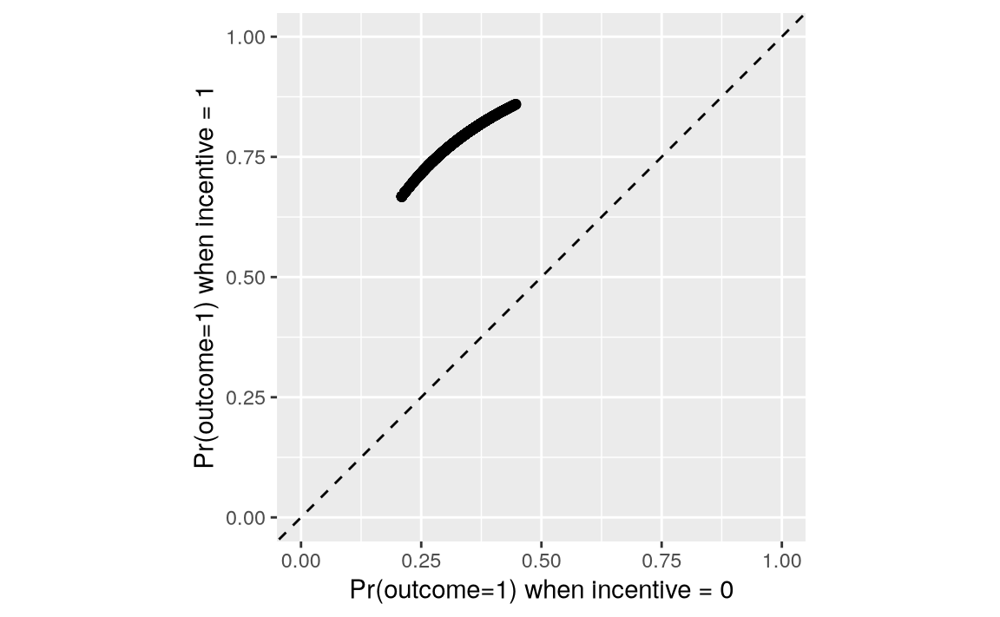
p = pl.DataFrame({
"Control": p.filter(pl.col("incentive") == 0)["estimate"],
"Treatment": p.filter(pl.col("incentive") == 1)["estimate"]
})
plot = (
ggplot(p, aes(x="Control", y="Treatment")) +
geom_point() +
geom_abline(
intercept=0, slope=1, linetype="--", color="grey") +
labs(
x="Pr(outcome=1) when incentive = 0",
y="Pr(outcome=1) when incentive = 1") +
xlim(0, 1) +
ylim(0, 1) +
theme_minimal()
)
plot.show()
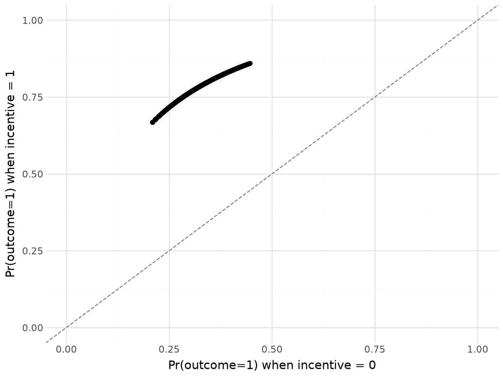
On this graph, each point represents a single study participant.9 The x-axis shows the predicted probability that Outcome equals 1 for an observed individual, after we artificially fix the incentive variable to 0. The y-axis shows the predicted probability that Outcome equals 1 for an individual with the same socio-demographic characteristics, after we artificially fix the incentive variable to 1. Each point thus shows what would be expected to happen if each individual did or did not receive the treatment.
Every point is well above the 45 degree line. This means that, for every observed combination of predictor values, for every participant in the study, our model says that changing the incentive variable from 0 to 1 increases the predicted probability that the person will seek to learn their HIV status.
5.3 Aggregation
Computing predictions for a large grid or for every observation in a dataset is useful, but the results can feel unwieldy. This section makes two principal arguments. First, it often makes sense to compute aggregated statistics, such as the average predicted outcome across the whole dataset, or by subgroups of the data. Second, the grid across which we aggregate can make a big difference to the results.
An “average prediction” is the outcome of a two step process. First, we compute predictions (fitted values) for each row in the original dataset. Then, we take the average of those predictions. This can be done manually by calling the predictions() function and taking the mean of estimates.
p = predictions(mod)
mean(p$estimate)
[1] 0.6916814
p = predictions(mod)
p["estimate"].mean()0.6916814159292035Alternatively, we can use the avg_predictions() function, which is a wrapper around predictions() that computes the average prediction directly.
avg_predictions(mod)
|———-|————|——|————-|——-|——–|
avg_predictions(mod)shape: (1, 7)
┌──────────┬───────────┬──────┬─────────┬─────┬───────┬───────┐
│ Estimate ┆ Std.Error ┆ z ┆ P(>|z|) ┆ S ┆ 2.5% ┆ 97.5% │
│ --- ┆ --- ┆ --- ┆ --- ┆ --- ┆ --- ┆ --- │
│ str ┆ str ┆ str ┆ str ┆ str ┆ str ┆ str │
╞══════════╪═══════════╪══════╪═════════╪═════╪═══════╪═══════╡
│ 0.692 ┆ 0.00791 ┆ 87.5 ┆ 0 ┆ inf ┆ 0.676 ┆ 0.707 │
└──────────┴───────────┴──────┴─────────┴─────┴───────┴───────┘The average predicted probability of seeking information about one’s HIV status, across all the study participants in the Thornton (2008) sample, is about 69%.
Now, imagine that we want to know if the average predicted probability of outcome=1 differs across age categories. To check this, we make the same function call, but add the by argument.
p = avg_predictions(mod, by = "agecat")
p
|———-|———-|————|——|————-|——-|——–|
p = avg_predictions(mod, by="agecat")
pshape: (3, 8)
┌──────────┬──────────┬───────────┬──────┬─────────┬─────┬───────┬───────┐
│ agecat ┆ Estimate ┆ Std.Error ┆ z ┆ P(>|z|) ┆ S ┆ 2.5% ┆ 97.5% │
│ --- ┆ --- ┆ --- ┆ --- ┆ --- ┆ --- ┆ --- ┆ --- │
│ enum ┆ str ┆ str ┆ str ┆ str ┆ str ┆ str ┆ str │
╞══════════╪══════════╪═══════════╪══════╪═════════╪═════╪═══════╪═══════╡
│ <18 ┆ 0.67 ┆ 0.024 ┆ 27.9 ┆ 0 ┆ inf ┆ 0.623 ┆ 0.717 │
│ 18 to 35 ┆ 0.673 ┆ 0.0116 ┆ 58.1 ┆ 0 ┆ inf ┆ 0.65 ┆ 0.695 │
│ >35 ┆ 0.72 ┆ 0.0121 ┆ 59.5 ┆ 0 ┆ inf ┆ 0.697 ┆ 0.744 │
└──────────┴──────────┴───────────┴──────┴─────────┴─────┴───────┴───────┘The average predicted probability of seeking one’s test result is about 67% for minors, and 72% for those above 35 years old. In Section 5.5 we will formally test if the difference between those two average predictions is statistically significant.
So far, we have taken averages over the empirical distribution of covariates, but analysts are not limited to that grid. One common alternative is to compute “marginal means” by averaging predictions across a balanced grid of predictors.10 This is useful in experimental settings, when the observed sample is not representative of the population, and when we want to marginalize while giving equal weight to each treatment condition.
To compute marginal means, we call the same function, using the newdata and by arguments.
p = avg_predictions(mod, newdata = "balanced", by = "agecat")
p
|———-|———-|————|——|————-|——-|——–|
p = avg_predictions(mod, newdata="balanced", by="agecat")
pshape: (3, 8)
┌──────────┬──────────┬───────────┬──────┬─────────┬─────┬───────┬───────┐
│ agecat ┆ Estimate ┆ Std.Error ┆ z ┆ P(>|z|) ┆ S ┆ 2.5% ┆ 97.5% │
│ --- ┆ --- ┆ --- ┆ --- ┆ --- ┆ --- ┆ --- ┆ --- │
│ enum ┆ str ┆ str ┆ str ┆ str ┆ str ┆ str ┆ str │
╞══════════╪══════════╪═══════════╪══════╪═════════╪═════╪═══════╪═══════╡
│ <18 ┆ 0.542 ┆ 0.0261 ┆ 20.7 ┆ 0 ┆ inf ┆ 0.491 ┆ 0.593 │
│ 18 to 35 ┆ 0.549 ┆ 0.0135 ┆ 40.6 ┆ 0 ┆ inf ┆ 0.522 ┆ 0.575 │
│ >35 ┆ 0.591 ┆ 0.0151 ┆ 39 ┆ 0 ┆ inf ┆ 0.561 ┆ 0.621 │
└──────────┴──────────┴───────────┴──────┴─────────┴─────┴───────┴───────┘Notice that the results are very different from the average predictions computed on the empirical grid. Now, the average predicted probability of seeking one’s test result is estimated at 54% for minors, and 59% for those above 35 years old.
The reason for this drastic change is that a balanced grid gives equal weight to each combination of categorical variables, while an empirical grid gives more weight to predictor values that are more frequent in the observed data. It turns out that, in the Thornton (2008) dataset, more participants belonged to the treatment than to the control group.
table(dat$incentive)
0 1
621 2204
dat["incentive"].value_counts()shape: (2, 2)
|———–|——-|
Therefore, when we compute an average prediction on the empirical distribution, predicted outcomes in the incentive=1 group are given more weight. This matters, because the average predicted probability that Outcome equals 1 is much higher in the treatment group than in the control group:
avg_predictions(mod, by = "incentive")
|———–|———-|————|——|————-|——-|——–|
avg_predictions(mod, by="incentive")shape: (2, 8)
┌───────────┬──────────┬───────────┬──────┬─────────┬─────┬───────┬───────┐
│ incentive ┆ Estimate ┆ Std.Error ┆ z ┆ P(>|z|) ┆ S ┆ 2.5% ┆ 97.5% │
│ --- ┆ --- ┆ --- ┆ --- ┆ --- ┆ --- ┆ --- ┆ --- │
│ str ┆ str ┆ str ┆ str ┆ str ┆ str ┆ str ┆ str │
╞═══════════╪══════════╪═══════════╪══════╪═════════╪═════╪═══════╪═══════╡
│ 0 ┆ 0.34 ┆ 0.0189 ┆ 18 ┆ 0 ┆ inf ┆ 0.303 ┆ 0.377 │
│ 1 ┆ 0.791 ┆ 0.00862 ┆ 91.7 ┆ 0 ┆ inf ┆ 0.774 ┆ 0.808 │
└───────────┴──────────┴───────────┴──────┴─────────┴─────┴───────┴───────┘Thus, the group-wise averages for each age categories are smaller when computed over a balanced grid than when they are computed over the empirical distribution.
The last example of aggregation that we consider is done across a “counterfactual grid.”11 To build such a grid, every observation of the dataset is duplicated, and the incentive variable is fixed to different values in each counterfactual dataset. We can achieve this with the variables argument.
avg_predictions(
mod,
variables = list(incentive = c(0, 1)),
by = "incentive")
|———–|———-|————|——|————-|——-|——–|
avg_predictions(mod,
variables={"incentive": [0, 1]},
by="incentive")shape: (2, 8)
┌───────────┬──────────┬───────────┬──────┬─────────┬─────┬───────┬───────┐
│ incentive ┆ Estimate ┆ Std.Error ┆ z ┆ P(>|z|) ┆ S ┆ 2.5% ┆ 97.5% │
│ --- ┆ --- ┆ --- ┆ --- ┆ --- ┆ --- ┆ --- ┆ --- │
│ str ┆ str ┆ str ┆ str ┆ str ┆ str ┆ str ┆ str │
╞═══════════╪══════════╪═══════════╪══════╪═════════╪═════╪═══════╪═══════╡
│ 0 ┆ 0.339 ┆ 0.0189 ┆ 18 ┆ 0 ┆ inf ┆ 0.302 ┆ 0.376 │
│ 1 ┆ 0.791 ┆ 0.00862 ┆ 91.8 ┆ 0 ┆ inf ┆ 0.774 ┆ 0.808 │
└───────────┴──────────┴───────────┴──────┴─────────┴─────┴───────┴───────┘This is equivalent to making unit-level predictions on two counterfactual grid, and then averaging those predictions manually.
p0 = predictions(mod, newdata = transform(dat, incentive = 0))
mean(p0$estimate)
[1] 0.3394248
p1 = predictions(mod, newdata = transform(dat, incentive = 1))
mean(p1$estimate)
[1] 0.7913343
p0 = predictions(mod, newdata = dat.with_columns(pl.lit(0).alias("incentive")))
p0["estimate"].mean()0.33904920592962534
p1 = predictions(mod, newdata = dat.with_columns(pl.lit(1).alias("incentive")))
p1["estimate"].mean()0.7910508301212515.4 Uncertainty
The predictions() family of functions accepts two arguments to control how to express the uncertainty around our estimates. First, the conf_level argument controls the size the confidence interval (default: 95%). Second, the vcov argument allows us to specify the type of standard errors to compute and report.
By default, marginaleffects functions return “classical” standard errors. These standard errors are computed using a procedure which assumes that errors are independently and identically distributed, and that rules out autocorrelation, clustering, or heteroskedasticity. Section 14.1.3 discusses these problems, and the solutions that statisticians have devised. For now, it suffices to point out that the vcov argument can be used to control the type of standard errors returned by the predictions() family of functions. For instance, setting vcov="HC3" will return heteroskedasticity-consistent standard errors.
avg_predictions(mod,
by = "incentive",
vcov = "HC3",
conf_level = .9)
|———–|———-|————|——|————-|——-|——–|
In the Thornton dataset, we know that participants were recruited from different villages, and our dataset includes a village variable that records the place of origin of each participant. If the sampling or treatment assignment mechanism is related to these groups, it may be appropriate to report clustered standard errors (Abadie et al. 2022). To do this, we use the vcov argument and specify the clustering unit on the right-hand side of the ~ sign in a formula.
avg_predictions(mod,
by = "incentive",
vcov = ~ village,
conf_level = .9)
|———–|———-|————|——|————-|——-|——–|
The last class of uncertainty estimates that we consider here relies on resampling or simulation: bootstrap, simulation-based inference, or conformal inference. Chapter 14 devotes substantial space to explain each of these approaches, but it is useful to note that these strategies are implemented using the inferences() function. To compute bootstrap confidence intervals, we can thus use the following command.
avg_predictions(mod,
by = "incentive",
conf_level = .9) |>
inferences(method = "boot", R = 1000)
|———–|———-|——-|——–|
Notice that the intervals reported above are all slightly different, but still remain in the same ballpark.
5.5 Test
In the previous sections, we computed average predictions by age subgroups, and noted that there appeared to be differences in the likelihood that younger and older people would seek their HIV test results. That observation was based solely on the point estimates of the average predictions, and did not rely on a statistical test. Now, we consider how analysts can compare predictions more formally.
5.5.1 Null hypothesis tests
To begin, we compute the average predicted outcome for each age subgroup.
p = avg_predictions(mod, by = "agecat")
p
|———-|———-|————|——|————-|——-|——–|
p = avg_predictions(mod, by = "agecat")
pshape: (3, 8)
┌──────────┬──────────┬───────────┬──────┬─────────┬─────┬───────┬───────┐
│ agecat ┆ Estimate ┆ Std.Error ┆ z ┆ P(>|z|) ┆ S ┆ 2.5% ┆ 97.5% │
│ --- ┆ --- ┆ --- ┆ --- ┆ --- ┆ --- ┆ --- ┆ --- │
│ enum ┆ str ┆ str ┆ str ┆ str ┆ str ┆ str ┆ str │
╞══════════╪══════════╪═══════════╪══════╪═════════╪═════╪═══════╪═══════╡
│ <18 ┆ 0.67 ┆ 0.024 ┆ 27.9 ┆ 0 ┆ inf ┆ 0.623 ┆ 0.717 │
│ 18 to 35 ┆ 0.673 ┆ 0.0116 ┆ 58.1 ┆ 0 ┆ inf ┆ 0.65 ┆ 0.695 │
│ >35 ┆ 0.72 ┆ 0.0121 ┆ 59.5 ┆ 0 ┆ inf ┆ 0.697 ┆ 0.744 │
└──────────┴──────────┴───────────┴──────┴─────────┴─────┴───────┴───────┘The average predicted outcome is 67% for young adults and 72% for participants above 35 years old. The difference between these two averages is
p$estimate[3] - p$estimate[2]
[1] 0.04782993
p["estimate"][2]-p["estimate"][1]0.047829927211287315To see if this risk difference is statistically significant, we use the hypothesis argument, as we did in Chapter 4.
p = avg_predictions(mod, by = "agecat",
hypothesis = "b3 - b2 = 0")
p
|————|———-|————|——|————-|——-|——–|
avg_predictions(mod, by="agecat", hypothesis = "b2 - b1 = 0")shape: (1, 7)
┌──────────┬───────────┬──────┬─────────┬──────┬───────┬────────┐
│ Estimate ┆ Std.Error ┆ z ┆ P(>|z|) ┆ S ┆ 2.5% ┆ 97.5% │
│ --- ┆ --- ┆ --- ┆ --- ┆ --- ┆ --- ┆ --- │
│ str ┆ str ┆ str ┆ str ┆ str ┆ str ┆ str │
╞══════════╪═══════════╪══════╪═════════╪══════╪═══════╪════════╡
│ 0.0478 ┆ 0.0167 ┆ 2.86 ┆ 0.00432 ┆ 7.86 ┆ 0.015 ┆ 0.0807 │
└──────────┴───────────┴──────┴─────────┴──────┴───────┴────────┘
Term: b2-b1=0The estimated difference between the 3rd and 2nd groups is about 5 percentage points, and the \p\ value associated with this difference is 0.004. This crosses the conventional (but arbitrary) statistical significance threshold of \p=0.05\. Many analysts would thus reject the null hypothesis that the average predicted probability of seeking one’s HIV test results is the same in the 18 to 35 and >35 groups.
In many cases, we would like to make more than one comparison at a time. For instance, imagine an experiment with three groups: placebo, low dose, high dose. In that kind of study, we may want to compare each treatment group to the baseline or “reference” placebo group. Alternatively, we may want to do “sequential” comparisons, comparing each group to the one that directly precedes it. This can be helpful when there is a clear logical order between categories, and when we are interested in the progression across groups.
In marginaleffects, this can be done easily by supplying a formula to the hypothesis argument. On the left-hand side, we set the comparison function: difference, ratio, etc. On the right hand side, we specify which estimates to compare to one another: sequential, reference, etc.
avg_predictions(mod,
by = "agecat",
hypothesis = difference ~ sequential)
|———————|———-|————|——-|————-|———|——–|
avg_predictions(mod, by="agecat",
hypothesis = "difference ~ sequential") shape: (2, 8)
┌────────────────────┬──────────┬───────────┬───────┬─────────┬───────┬─────────┬────────┐
│ Term ┆ Estimate ┆ Std.Error ┆ z ┆ P(>|z|) ┆ S ┆ 2.5% ┆ 97.5% │
│ --- ┆ --- ┆ --- ┆ --- ┆ --- ┆ --- ┆ --- ┆ --- │
│ str ┆ str ┆ str ┆ str ┆ str ┆ str ┆ str ┆ str │
╞════════════════════╪══════════╪═══════════╪═══════╪═════════╪═══════╪═════════╪════════╡
│ (18 to 35) - (<18) ┆ 0.00274 ┆ 0.0267 ┆ 0.103 ┆ 0.918 ┆ 0.123 ┆ -0.0495 ┆ 0.055 │
│ (>35) - (18 to 35) ┆ 0.0478 ┆ 0.0167 ┆ 2.86 ┆ 0.00432 ┆ 7.86 ┆ 0.015 ┆ 0.0807 │
└────────────────────┴──────────┴───────────┴───────┴─────────┴───────┴─────────┴────────┘By modifying the formula, we can compare each group to the “reference” or baseline category, that is, participants under 18 years old.
avg_predictions(mod,
by = "agecat",
hypothesis = difference ~ reference)
|———————|———-|————|——-|————-|———-|——–|
avg_predictions(mod, by="agecat",
hypothesis = "difference ~ reference") shape: (2, 8)
┌────────────────────┬──────────┬───────────┬───────┬─────────┬───────┬──────────┬───────┐
│ Term ┆ Estimate ┆ Std.Error ┆ z ┆ P(>|z|) ┆ S ┆ 2.5% ┆ 97.5% │
│ --- ┆ --- ┆ --- ┆ --- ┆ --- ┆ --- ┆ --- ┆ --- │
│ str ┆ str ┆ str ┆ str ┆ str ┆ str ┆ str ┆ str │
╞════════════════════╪══════════╪═══════════╪═══════╪═════════╪═══════╪══════════╪═══════╡
│ (18 to 35) - (<18) ┆ 0.00274 ┆ 0.0267 ┆ 0.103 ┆ 0.918 ┆ 0.123 ┆ -0.0495 ┆ 0.055 │
│ (>35) - (<18) ┆ 0.0506 ┆ 0.0269 ┆ 1.88 ┆ 0.0602 ┆ 4.05 ┆ -0.00218 ┆ 0.103 │
└────────────────────┴──────────┴───────────┴───────┴─────────┴───────┴──────────┴───────┘The hypothesis argument also allows us to conduct hypothesis tests by subgroups. For example, consider this command, which computes average predicted outcomes for each observed combination of incentive and agecat.
avg_predictions(mod,
by = c("incentive", "agecat"))
|———–|———-|———-|————|——-|————-|——-|——–|
avg_predictions(mod, by=["incentive","agecat"])shape: (6, 9)
┌───────────┬──────────┬──────────┬───────────┬───┬─────────┬─────┬───────┬───────┐
│ incentive ┆ agecat ┆ Estimate ┆ Std.Error ┆ … ┆ P(>|z|) ┆ S ┆ 2.5% ┆ 97.5% │
│ --- ┆ --- ┆ --- ┆ --- ┆ ┆ --- ┆ --- ┆ --- ┆ --- │
│ str ┆ enum ┆ str ┆ str ┆ ┆ str ┆ str ┆ str ┆ str │
╞═══════════╪══════════╪══════════╪═══════════╪═══╪═════════╪═════╪═══════╪═══════╡
│ 0 ┆ <18 ┆ 0.312 ┆ 0.0321 ┆ … ┆ 0 ┆ inf ┆ 0.249 ┆ 0.375 │
│ 0 ┆ 18 to 35 ┆ 0.324 ┆ 0.0209 ┆ … ┆ 0 ┆ inf ┆ 0.283 ┆ 0.365 │
│ 0 ┆ >35 ┆ 0.37 ┆ 0.0235 ┆ … ┆ 0 ┆ inf ┆ 0.324 ┆ 0.416 │
│ 1 ┆ <18 ┆ 0.771 ┆ 0.0234 ┆ … ┆ 0 ┆ inf ┆ 0.725 ┆ 0.816 │
│ 1 ┆ 18 to 35 ┆ 0.778 ┆ 0.0119 ┆ … ┆ 0 ┆ inf ┆ 0.755 ┆ 0.801 │
│ 1 ┆ >35 ┆ 0.811 ┆ 0.0117 ┆ … ┆ 0 ┆ inf ┆ 0.788 ┆ 0.834 │
└───────────┴──────────┴──────────┴───────────┴───┴─────────┴─────┴───────┴───────┘We can use the hypothesis argument in similar fashion as before, but add a vertical bar to specify that we want to compute sequential risk differences within subgroups.
p = avg_predictions(mod,
by = c("incentive", "agecat"),
hypothesis = difference ~ sequential | incentive)
p
|—-|—-|—-|—-|—-|—-|—-|—-|
p = avg_predictions(mod, by=["incentive","agecat"],
hypothesis = "difference ~ sequential | incentive")
pshape: (4, 9)
┌───────────┬───────────────────┬──────────┬───────────┬───┬─────────┬───────┬─────────┬────────┐
│ incentive ┆ Term ┆ Estimate ┆ Std.Error ┆ … ┆ P(>|z|) ┆ S ┆ 2.5% ┆ 97.5% │
│ --- ┆ --- ┆ --- ┆ --- ┆ ┆ --- ┆ --- ┆ --- ┆ --- │
│ str ┆ str ┆ str ┆ str ┆ ┆ str ┆ str ┆ str ┆ str │
╞═══════════╪═══════════════════╪══════════╪═══════════╪═══╪═════════╪═══════╪═════════╪════════╡
│ 0 ┆ (18 to 35, 0) - ┆ 0.0111 ┆ 0.0311 ┆ … ┆ 0.721 ┆ 0.471 ┆ -0.05 ┆ 0.0722 │
│ ┆ (<18, 0) ┆ ┆ ┆ ┆ ┆ ┆ ┆ │
│ 0 ┆ (>35, 0) - (18 to ┆ 0.046 ┆ 0.0216 ┆ … ┆ 0.0332 ┆ 4.91 ┆ 0.00367 ┆ 0.0884 │
│ ┆ 35, 0) ┆ ┆ ┆ ┆ ┆ ┆ ┆ │
│ 1 ┆ (18 to 35, 1) - ┆ 0.00717 ┆ 0.0254 ┆ … ┆ 0.778 ┆ 0.363 ┆ -0.0426 ┆ 0.0569 │
│ ┆ (<18, 1) ┆ ┆ ┆ ┆ ┆ ┆ ┆ │
│ 1 ┆ (>35, 1) - (18 to ┆ 0.0333 ┆ 0.0154 ┆ … ┆ 0.0312 ┆ 5 ┆ 0.00301 ┆ 0.0636 │
│ ┆ 35, 1) ┆ ┆ ┆ ┆ ┆ ┆ ┆ │
└───────────┴───────────────────┴──────────┴───────────┴───┴─────────┴───────┴─────────┴────────┘This shows that, in the control group (incentive=0), the difference between the average predicted outcome for participants over 35 and for those between 18 and 35 is about 5 percentage points. However, in the treatment group (incentive=1), this difference is about 3 percentage points. Both of these differences are associated with relatively large \z\ statistics, and are thus statistically distinguishable from zero.
5.5.2 Equivalence tests
Flipping the logic around, the analyst could run an equivalence test to determine if the difference between average predicted outcomes in two subgroups is small enough to be considered negligible.12 Imagine that, for domain-specific reasons, a risk difference smaller than 10 percentage points is considered “uninteresting,” “negligible,” or “equivalent to zero.”
We start with this code, which computes the average predicted outcome for each age category.
avg_predictions(mod, by = "agecat")
|———-|———-|————|——|————-|——-|——–|
avg_predictions(mod, by="agecat")shape: (3, 8)
┌──────────┬──────────┬───────────┬──────┬─────────┬─────┬───────┬───────┐
│ agecat ┆ Estimate ┆ Std.Error ┆ z ┆ P(>|z|) ┆ S ┆ 2.5% ┆ 97.5% │
│ --- ┆ --- ┆ --- ┆ --- ┆ --- ┆ --- ┆ --- ┆ --- │
│ enum ┆ str ┆ str ┆ str ┆ str ┆ str ┆ str ┆ str │
╞══════════╪══════════╪═══════════╪══════╪═════════╪═════╪═══════╪═══════╡
│ <18 ┆ 0.67 ┆ 0.024 ┆ 27.9 ┆ 0 ┆ inf ┆ 0.623 ┆ 0.717 │
│ 18 to 35 ┆ 0.673 ┆ 0.0116 ┆ 58.1 ┆ 0 ┆ inf ┆ 0.65 ┆ 0.695 │
│ >35 ┆ 0.72 ┆ 0.0121 ┆ 59.5 ┆ 0 ┆ inf ┆ 0.697 ┆ 0.744 │
└──────────┴──────────┴───────────┴──────┴─────────┴─────┴───────┴───────┘Then, we conduct a hypothesis test to compare the average predicted outcome for participants over 35 and for those under 18.
avg_predictions(mod,
by = "agecat",
hypothesis = "b3 - b1 = 0")
|————|———-|————|——|————-|———-|——–|
avg_predictions(mod,
by="agecat",
hypothesis = "b2 - b0 = 0")shape: (1, 7)
┌──────────┬───────────┬──────┬─────────┬──────┬──────────┬───────┐
│ Estimate ┆ Std.Error ┆ z ┆ P(>|z|) ┆ S ┆ 2.5% ┆ 97.5% │
│ --- ┆ --- ┆ --- ┆ --- ┆ --- ┆ --- ┆ --- │
│ str ┆ str ┆ str ┆ str ┆ str ┆ str ┆ str │
╞══════════╪═══════════╪══════╪═════════╪══════╪══════════╪═══════╡
│ 0.0506 ┆ 0.0269 ┆ 1.88 ┆ 0.0602 ┆ 4.05 ┆ -0.00218 ┆ 0.103 │
└──────────┴───────────┴──────┴─────────┴──────┴──────────┴───────┘
Term: b2-b0=0Finally, we add the equivalence argument to specify the interval of practical equivalence.
avg_predictions(mod,
by = "agecat",
hypothesis = "b3 - b1 = 0",
equivalence = c(-0.1, 0.1))
|—-|—-|—-|—-|—-|—-|—-|—-|—-|
avg_predictions(mod,
by="agecat",
hypothesis="b2 - b0 = 0",
equivalence=[-0.1, 0.1])shape: (1, 10)
┌──────────┬───────────┬──────┬─────────┬───┬────────────┬───────────┬──────────┬───────┐
│ Estimate ┆ Std.Error ┆ z ┆ P(>|z|) ┆ … ┆ p (NonSup) ┆ p (Equiv) ┆ 2.5% ┆ 97.5% │
│ --- ┆ --- ┆ --- ┆ --- ┆ ┆ --- ┆ --- ┆ --- ┆ --- │
│ str ┆ str ┆ str ┆ str ┆ ┆ str ┆ str ┆ str ┆ str │
╞══════════╪═══════════╪══════╪═════════╪═══╪════════════╪═══════════╪══════════╪═══════╡
│ 0.0506 ┆ 0.0269 ┆ 1.88 ┆ 0.0602 ┆ … ┆ 0.0331 ┆ 0.0331 ┆ -0.00218 ┆ 0.103 │
└──────────┴───────────┴──────┴─────────┴───┴────────────┴───────────┴──────────┴───────┘
Term: b2-b0=0The \p\ value associated with this test of equivalence is small. This suggests that we can reject the null hypothesis that the difference between average predicted outcomes is large or meaningful.
5.6 Visualization
In many cases, data analysts will want to visualize (potentially aggregated) predictions rather than report raw numeric values. This is easy to do with the plot_predictions() function, which has a syntax that closely parallels that of the other marginaleffects functions.
5.6.1 Unit predictions
As discussed in Chapter 3, the quantities derived from statistical models—predictions, counterfactual comparisons, and slopes—are typically conditional, in the sense that they depend on the values of all covariates in the model. This implies that each unit in our sample will be associated with its own prediction or effect estimate. In Avoiding One-Number Summaries, Harrell (2021) argues that data analysts should avoid the temptation to summarize individual-level estimates. Rather, Harrell argues, they should display the full distribution of estimates to convey a sense of the heterogeneity in our quantity of interest, across different combinations of predictor values.
Histograms and Empirical Cumulative Distribution Function (ECDF) plots are two common ways to visualize such a distribution. Since the output generated by the predictions() function is a standard data frame, it is easy to feed that object to any plotting function in R or Python, in order to craft good-looking visualizations. Here, we draw two plots, and combine them using the special + operator supplied by the patchwork package (Pedersen 2024).
library(patchwork)
p = predictions(mod)
# Histogram
p1 = ggplot(p) +
geom_histogram(aes(estimate, fill = factor(incentive))) +
labs(x = "Pr(outcome = 1)", y = "Count", fill = "Incentive") +
scale_fill_grey()
# Empirical Cumulative Distribution Function
p2 = ggplot(p) +
stat_ecdf(aes(estimate, colour = factor(incentive))) +
labs(x = "Pr(outcome = 1)",
y = "Cumulative Probability",
colour = "Incentive") +
scale_colour_grey()
# Combined plots
p1 + p2
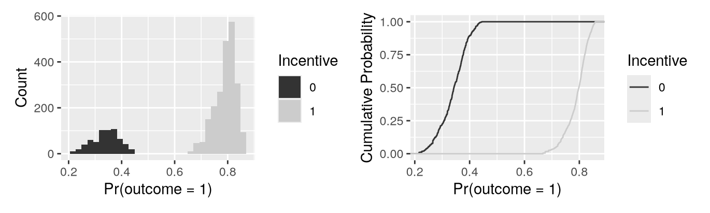
p = predictions(mod)
p = p.with_columns(pl.col("incentive").cast(pl.Utf8))
(
ggplot(p, aes(x="estimate", fill="incentive")) +
geom_histogram() + \
labs(x="Pr(outcome=1) when incentive = 0")
).show()
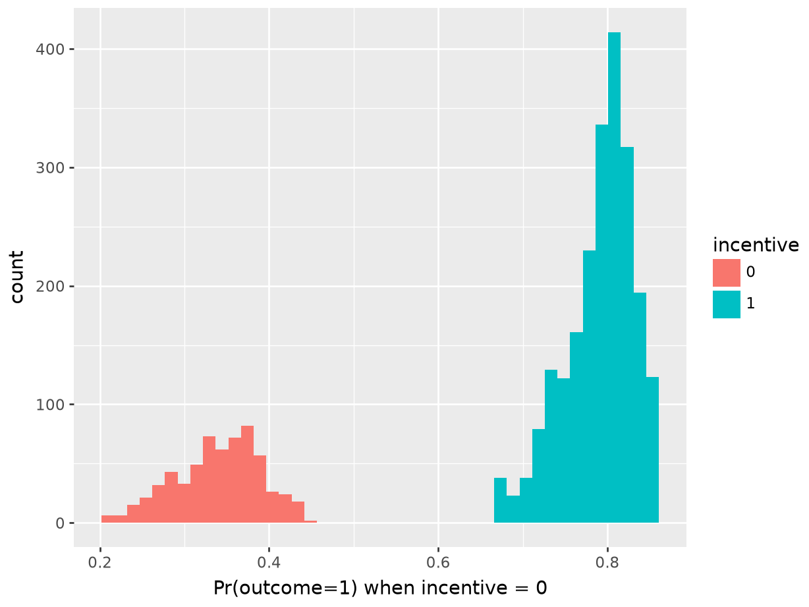
(
ggplot(p, aes(x="estimate", colour="incentive")) +
geom_line(stat='ecdf')
).show()
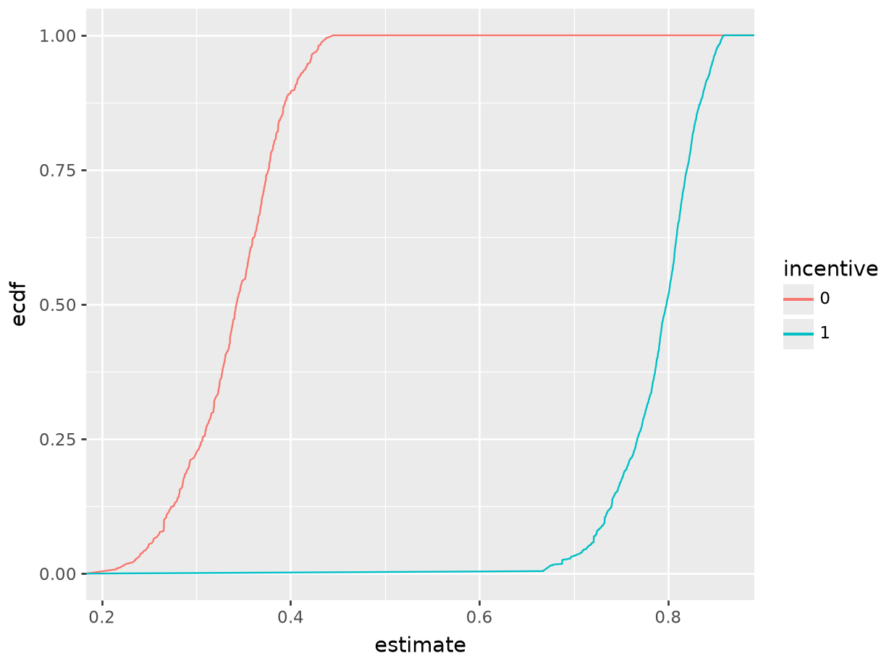
The left side of Figure 5.2 is a histogram showing the distribution of predicted probabilities for each individual in the observed dataset. As usual, the x-axis represents the range of predicted outcomes, while the y-axis shows the number of study participants in each bin. By assigning different colors to the bins based on the treatment arm (incentive equal 1 or 1), we highlight one key feature of the distribution: predicted outcomes for people in the treatment group tend to be much higher than predicted outcomes for people in the control group. Indeed, the distribution of outcome probabilities without an incentive (black) is concentrated between 0.2 and 0.4, indicating a low probability of travelinging to the test center. In contrast, the distribution of predicted outcome for participants who received a monetary incentive (grey) is concentrated between 0.70 and 0.85. This suggests that those who received an incentive are considerably more likely to seek their test results.
The right side of Figure 5.2 presents an ECDF plot. Again, the x-axis represents the range of predicted outcomes. This time, however, the y-axis indicates the empirical cumulative distribution, that is, the proportion of data points that are less than or equal to a specific value. For any given value on the x-axis, the height of the curve indicates the proportion of data points that are less than or equal to that value. For example, at 0.3 on the x-axis, we see that the incentive=0 line is close to 0.25. This means that about 25% of participants in our sample have predicted outcome smaller than 0.3. Where the ECDF curve is steep, we know that much of our data is concentrated in that part of the distribution. With this in mind, we see that many of our predicted outcome values are clustered near 0.3 in the control group, and near 0.8 in the treatment group.
5.6.2 Marginal predictions
So far, we have focused on the full distribution of unit-level predictions. Often, we want to marginalize those unit-level estimates to plot average estimates instead. The first approach to do this uses the by argument.
When we use this argument, the function will (1) compute predictions for each observation in the actually observed dataset and (2) average unit-level predictions across some variable(s) of interest. This is equivalent to plotting the results of calling avg_predictions() using the by argument.
For example, if we want to compute the average predicted probability that outcome equals 1, by subgroup, we execute this code.
avg_predictions(mod, by = "incentive")
|———–|———-|————|——|————-|——-|——–|
avg_predictions(mod, by="incentive")shape: (2, 8)
┌───────────┬──────────┬───────────┬──────┬─────────┬─────┬───────┬───────┐
│ incentive ┆ Estimate ┆ Std.Error ┆ z ┆ P(>|z|) ┆ S ┆ 2.5% ┆ 97.5% │
│ --- ┆ --- ┆ --- ┆ --- ┆ --- ┆ --- ┆ --- ┆ --- │
│ str ┆ str ┆ str ┆ str ┆ str ┆ str ┆ str ┆ str │
╞═══════════╪══════════╪═══════════╪══════╪═════════╪═════╪═══════╪═══════╡
│ 0 ┆ 0.34 ┆ 0.0189 ┆ 18 ┆ 0 ┆ inf ┆ 0.303 ┆ 0.377 │
│ 1 ┆ 0.791 ┆ 0.00862 ┆ 91.7 ┆ 0 ┆ inf ┆ 0.774 ┆ 0.808 │
└───────────┴──────────┴───────────┴──────┴─────────┴─────┴───────┴───────┘We plot the same results using the plot_predictions() function.
p1 = plot_predictions(mod, by = "incentive")
p2 = plot_predictions(mod, by = c("incentive", "agecat"))
p1 + p2
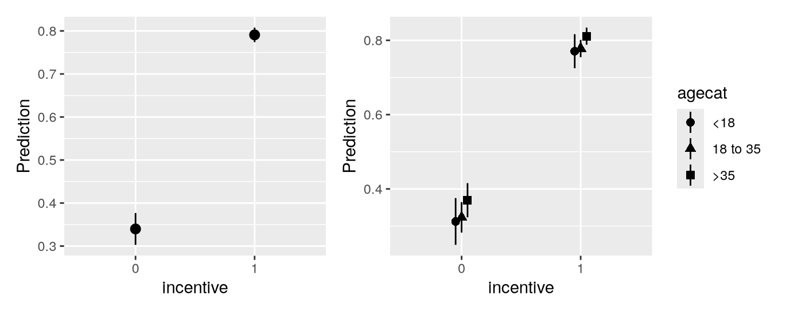
outcome equals 1.
plot_predictions(mod, by="incentive").show()
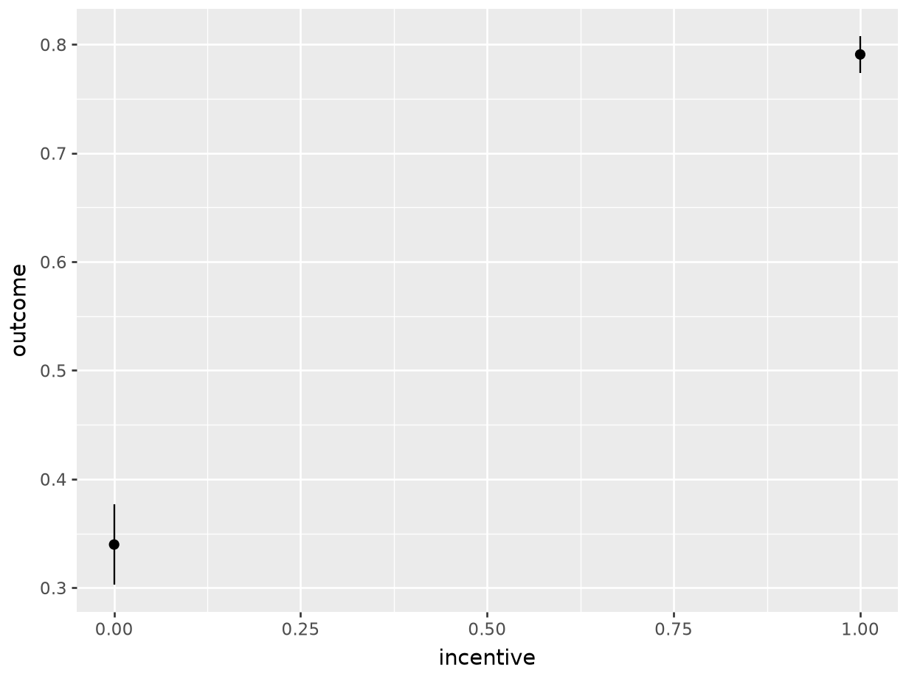
plot_predictions(mod, by=["incentive", "agecat"]).show()
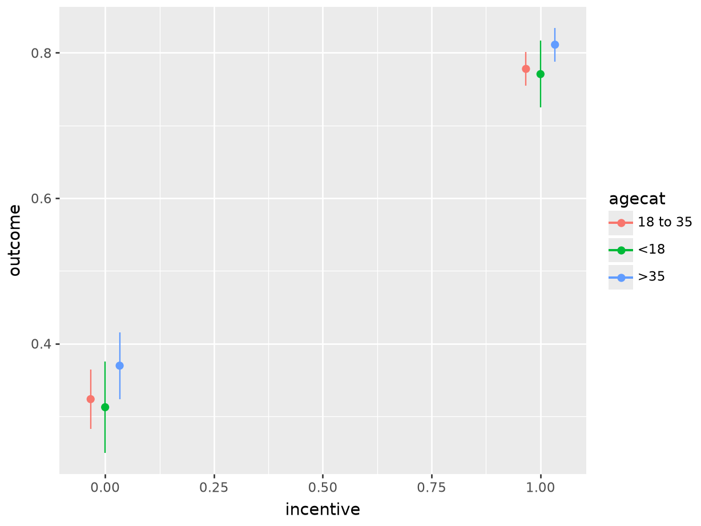
These plots show that there is a very large gap between the predicted outcome for members of different incentive groups. In contrast, differences between age categories seem much more modest.
Note that the plot_predictions() function also accepts a newdata argument. This means that we can, for example, plot marginal means constructed by averaging across a balanced grid of predictors.13
plot_predictions(mod, by = "incentive", newdata = "balanced")
plot_predictions(mod, by="incentive",
newdata = "balanced", draw = False)shape: (2, 8)
┌───────────┬──────────┬───────────┬──────┬─────────┬─────┬───────┬───────┐
│ incentive ┆ Estimate ┆ Std.Error ┆ z ┆ P(>|z|) ┆ S ┆ 2.5% ┆ 97.5% │
│ --- ┆ --- ┆ --- ┆ --- ┆ --- ┆ --- ┆ --- ┆ --- │
│ str ┆ str ┆ str ┆ str ┆ str ┆ str ┆ str ┆ str │
╞═══════════╪══════════╪═══════════╪══════╪═════════╪═════╪═══════╪═══════╡
│ 0 ┆ 0.332 ┆ 0.02 ┆ 16.6 ┆ 0 ┆ inf ┆ 0.293 ┆ 0.371 │
│ 1 ┆ 0.789 ┆ 0.0103 ┆ 76.6 ┆ 0 ┆ inf ┆ 0.769 ┆ 0.809 │
└───────────┴──────────┴───────────┴──────┴─────────┴─────┴───────┴───────┘5.6.3 条件预测
在某些情境下，绘制边际预测可能并不合适。例如，当感兴趣的预测变量之一是连续变量、预测变量很多，或存在很大的异质性时，上一节介绍的命令可能会生成难以阅读的锯齿状图。在这种情况下，绘制条件预测可能很有用。在这里，“条件”是指：我们根据由代表性取值构成的网格中预测变量的取值来计算预测。不过，与上一节不同，我们不会在显示估计值之前对多个预测取平均。我们固定该网格，并立即显示针对该网格生成的预测。
plot_predictions() 函数的 condition 参数正是用于完成这一操作：构建由代表性预测变量取值组成的网格，计算每种预测变量取值组合对应的预测，并绘制结果。在下面的示例中，我们将一个或多个预测变量固定为其唯一取值（分类变量），或固定为从最小值到最大值的等间距网格（数值变量）。模型中的其他预测变量保持在其均值或众数。
p1 = plot_predictions(mod,
condition = "distance"
)
p2 = plot_predictions(mod,
condition = c("distance", "incentive")
)
p3 = plot_predictions(mod,
condition = c("distance", "incentive", "agecat")
)
(p1 + p2) / p3
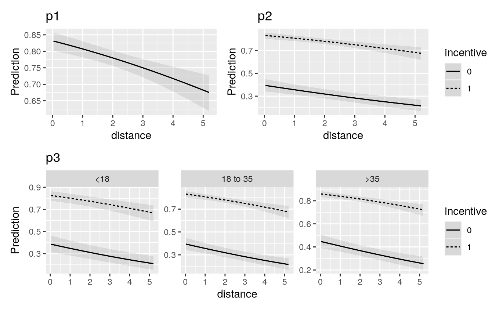
outcome 等于 1 的预测概率。其他变量保持在其均值或众数。
在这些图中，居住地距离考试中心较远的个体（图的右侧）的 outcome 等于 1 的预测概率较低。此外，我们看到虚线远高于实线，这表明接受了金钱激励的个体的预测结果变量值更高。
plot_predictions() 函数的一个有用特性是，可以在 condition 参数中明确设置某些变量的取值。例如，针对一名年龄超过 35 岁且未获得金钱激励的个体，绘制在不同 distance 取值下的预测 outcome：
plot_predictions(mod, condition = list(
"distance", "agecat" = ">35", "incentive" = 0
))
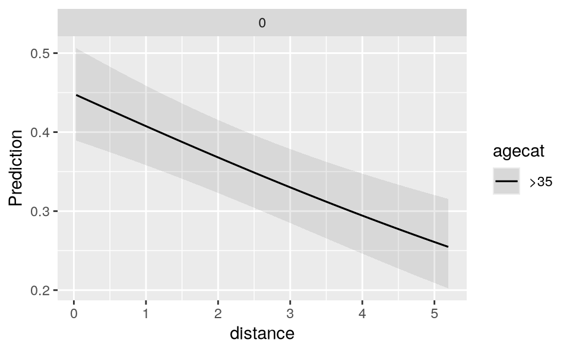
plot_predictions(mod,
condition={"distance" : None, "agecat" : ">35", "incentive" : 0 }
).show()
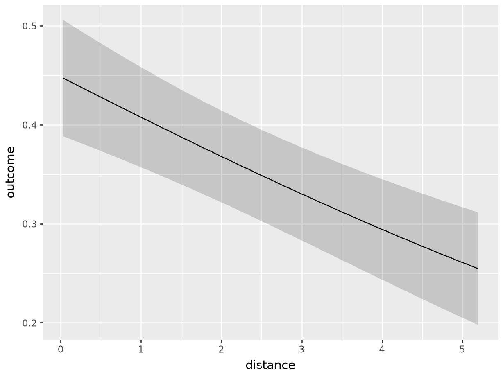
5.6.4 自定义
在 R 中，plot_predictions() 的输出是标准的 ggplot2 对象。在 Python 中，该对象与 plotnine 库兼容。因此，用户可以非常方便地自定义图形外观。例如，可以像下面这样更改样式主题并添加地毯图。
plot_predictions(mod, condition = "distance", rug = TRUE) +
theme_grey() +
ylim(c(.65, .81)) + xlim(c(2, 4.5))
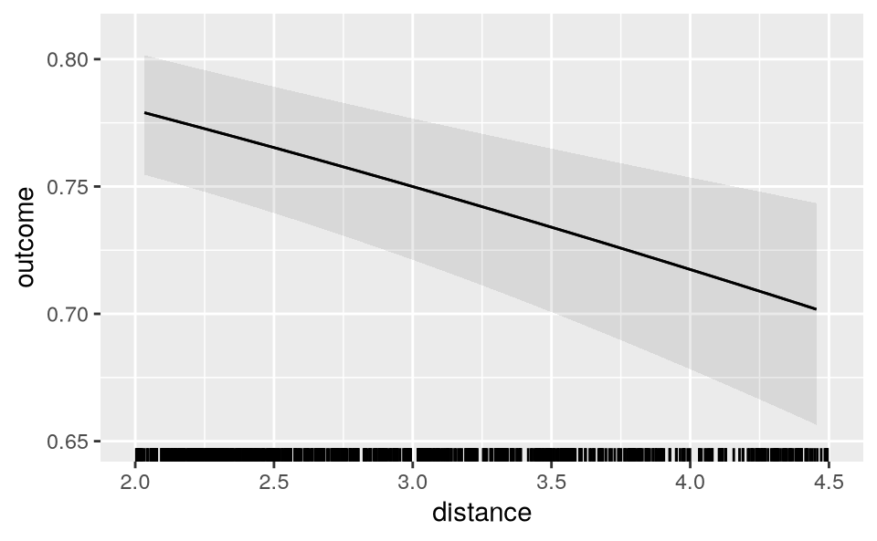
一种功能更强但使用起来不太方便的自定义图形方式，是调用 draw=FALSE 参数。该参数会返回用于创建图形的原始值数据框。随后，你可以使用这些数据，结合 base R 图形、ggplot2 或任何喜欢的其他绘图函数来创建自己的图形。
plot_predictions(mod, by = "incentive", draw = FALSE)
incentive estimate std.error statistic p.value s.value conf.low
1 0 0.3397746 0.018899189 17.97826 2.883944e-72 237.6508 0.3027328
2 1 0.7908348 0.008620355 91.74040 0.000000e+00 Inf 0.7739393
conf.high df
1 0.3768163 Inf
2 0.8077304 Inf
plot_predictions(mod, by="incentive", draw = False)shape: (2, 8)
┌───────────┬──────────┬───────────┬──────┬─────────┬─────┬───────┬───────┐
│ incentive ┆ Estimate ┆ Std.Error ┆ z ┆ P(>|z|) ┆ S ┆ 2.5% ┆ 97.5% │
│ --- ┆ --- ┆ --- ┆ --- ┆ --- ┆ --- ┆ --- ┆ --- │
│ str ┆ str ┆ str ┆ str ┆ str ┆ str ┆ str ┆ str │
╞═══════════╪══════════╪═══════════╪══════╪═════════╪═════╪═══════╪═══════╡
│ 0 ┆ 0.34 ┆ 0.0189 ┆ 18 ┆ 0 ┆ inf ┆ 0.303 ┆ 0.377 │
│ 1 ┆ 0.791 ┆ 0.00862 ┆ 91.7 ┆ 0 ┆ inf ┆ 0.774 ┆ 0.808 │
└───────────┴──────────┴───────────┴──────┴─────────┴─────┴───────┴───────┘5.7 总结
本章将“预测”定义为：拟合模型针对给定预测变量取值组合所预期的结果变量值。预测是一种有用的描述性量。对于所关注总体中的不同个体、单位或亚组，它表示一种预期或最佳猜测。
marginaleffects 包中的 predictions() 函数可以针对范围广泛的模型计算预测。avg_predictions() 汇总个体层面的预测。plot_predictions() 以可视化方式呈现预测。这些函数的主要参数总结于表 5.1。
| 参数 | |
|---|---|
model
|
用于生成预测的拟合模型。 |
newdata
|
预测变量取值网格。 |
variables
|
在反事实网格上进行预测。 |
vcov
|
标准误：经典、稳健、聚类等。 |
conf_level
|
置信区间的范围。 |
type
|
预测类型：response、link 等。 |
by
|
平均预测的分组变量。 |
byfun
|
自定义聚合函数。 |
wts
|
用于计算平均预测的权重。 |
transform
|
事后变换。 |
hypothesis
|
比较预测值，进行线性或非线性假设检验，或指定原假设。 |
equivalence
|
等效性检验 |
df
|
假设检验的自由度。 |
numderiv
|
用于计算数值导数的算法。 |
…
|
其他参数会传递给建模包提供的 predict() 方法。
|
predictions()、avg_predictions() 和 plot_predictions() 函数的主要参数。
要清晰定义预测及其相关检验，分析者必须作出五项决定。
第一，量。
根据统计模型的类型，预测可以在不同尺度上计算。例如，在广义线性模型（GLM）中，可以在“link”或“response”尺度上进行预测。在大多数情况下，分析者应当在与结果变量相同的尺度上报告预测，因为这对读者来说最为自然。
预测的尺度由
type参数控制。
第二，预测变量。
预测是条件量，也就是说，它们取决于模型中所有预测变量的取值。
分析者可以针对预测变量取值的不同组合，或不同的网格进行预测：经验网格、感兴趣网格、代表性网格、平衡网格或反事实网格。
预测变量网格由
newdata参数和datagrid()函数定义。
第三，聚合。
为了简化结果呈现，报告平均预测通常是合理的。分析者可以在不同的聚合方案之间进行选择：
个体层面预测（不聚合）
平均预测
按亚组划分的平均预测
预测的加权平均
可以使用
avg_predictions()函数和by参数聚合预测。
第四，不确定性。
在
marginaleffects中，vcov参数允许分析者报告预测值周围的经典、稳健或聚类标准误。inferences()函数可以通过自助法、基于模拟的推断或保形预测来计算不确定性区间。
第五，检验。
原假设检验旨在确定预测（或预测的某个函数）是否不同于原假设值。例如，分析者可能希望检查两个预测是否彼此不同。可以使用
hypothesis参数进行原假设检验。等效性检验旨在确定预测（或预测的某个函数）是否与参考值相似。可以使用
equivalence参数进行等效性检验。
Abadie, Alberto, Susan Athey, Guido W Imbens, and Jeffrey M Wooldridge. 2022. “When Should You Adjust Standard Errors for Clustering?*.” The Quarterly Journal of Economics 138 (1): 1–35. https://doi.org/10.1093/qje/qjac038. Harrell, Frank. 2021. Statistical Thinking - Avoiding One-Number Summaries of Treatment Effects for RCTs with Binary Outcomes. https://www.fharrell.com/post/rdist/. Hyndman, Rob J, and George Athanasopoulos. 2018. Forecasting: Principles and Practice. OTexts. Lenth, Russell V. 2024. emmeans: Estimated Marginal Means, Aka Least-Squares Means. https://cran.r-project.org/package=emmeans. Pedersen, Thomas Lin. 2024. Patchwork: The Composer of Plots. https://patchwork.data-imaginist.com. Thornton, Rebecca L. 2008. “The Demand for, and Impact of, Learning HIV Status.” American Economic Review 98 (5): 1829–63.
我们也可以使用
R中内置的plogis()函数，或使用Python中的scipy.stats.logistic.cdf()，而不是自行定义g()函数。↩︎当
datagrid()作为marginaleffects函数的参数调用时，可以省略model参数。↩︎由于这些点聚集得很紧密，因此在低分辨率下会呈现为一条曲线。↩︎
这是
emmeans等软件包采用的默认方法（Lenth 2024）。↩︎